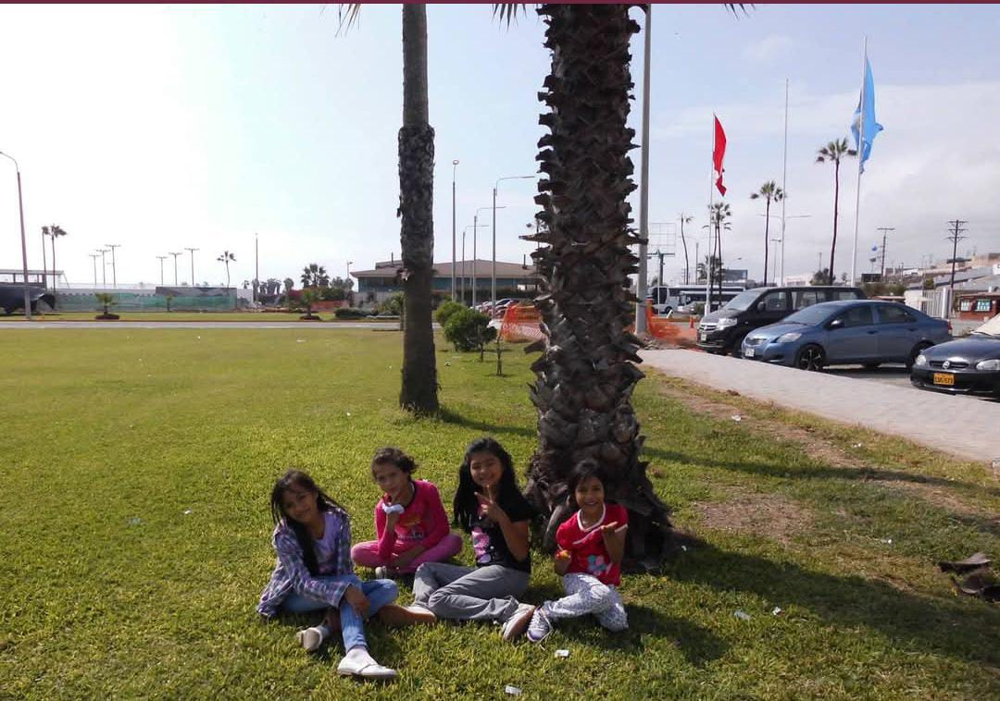

Sari
Sarita, con apenas 18 años, a veces se siente en medio de una balanza complicada, la presión silenciosa de cumplir con sueños que no eran suyos, sino de quienes la rodeaban. Esa mezcla la hizo introvertida, reservada y muy observadora, pues aprendió pronto que no siempre podía mostrar lo que sentía realmente.

Ser la menor le ha permitido crecer rodeada de cariño y protección, pero también le ha dado la oportunidad de aprender de las experiencias de sus hermanas mayores. Sin embargo, a lo largo de su vida también cargó con algo que no le correspondía: muchas expectativas que los demás habían puesto sobre ella. Como era la más pequeña, todos esperaban que alcanzara lo que sus hermanas no pudieron, que fuera un ejemplo perfecto, o que siguiera caminos que no necesariamente eran los suyos.

A pesar de ocultar muchas veces sus sentimientos para evitar que la lastimen, Sarita es una excelente persona. Su sensibilidad la lleva a comprender lo que otros callan, y aunque guarde silencio sobre sus propias emociones, siempre encuentra la manera de dar palabras de aliento a quienes lo necesitan
Pero, aunque la carga de expectativas la ha hecho dudar de sí misma en más de una ocasión, también le ha dado fuerza. Sarita está aprendiendo que no tiene por qué cargar con lo que no le corresponde, que su vida y sus decisiones son únicamente suyas. Poco a poco empieza a comprender que lo más valioso no es cumplir con lo que los demás esperan, sino descubrir lo que ella realmente quiere ser.